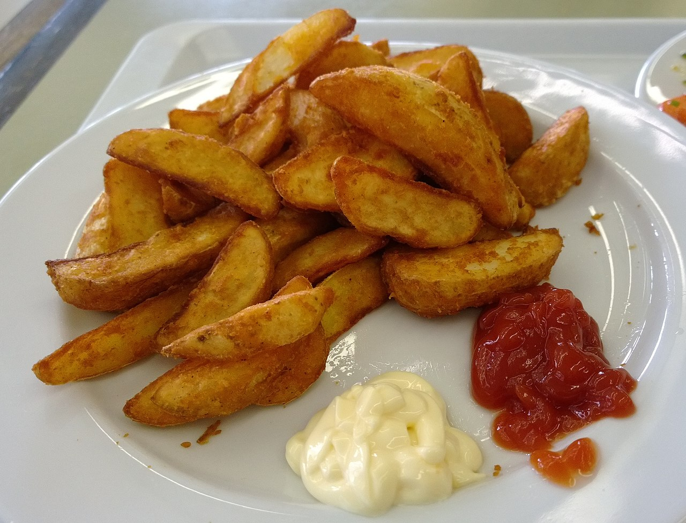

Potato Wedge

Description
Potato wedges are irregular wedge-shaped slices of potato, often large and unpeeled, that are either baked or fried. They are sold at diners and fast food restaurants. In Australia, potato wedges are a common bar food, that are almost always served with some kind of sauce. One may use sour cream, sweet chilli sauce, ketchup, or some combination of these. They are usually seasoned with a variety of spices, commonly paprika, salt and pepper.
Ingredients
2 medium russet potatoes
1½ tablespoons olive oil
½ teaspoon ground paprika
½ teaspoon parsley flakes
½ teaspoon chili powder
½ teaspoon sea salt
⅛ teaspoon ground black pepper
Steps
- Preheat an air fryer to 400 degrees F (200 degrees C).
- Cut each potato in half lengthwise. Cut each half in half lengthwise, and then cut each quarter in half lengthwise. You will have 16 wedges.
- Place potato wedges in a large bowl. Add olive oil, paprika, parsley, chili, salt, and pepper; mix until well combined.
- Place 1/2 of the potato wedges in the basket of the air fryer and cook for 10 minutes.
- Flip wedges with tongs and cook for an additional 5 minutes. Remove to a plate.
- Repeat to cook the remaining wedges.